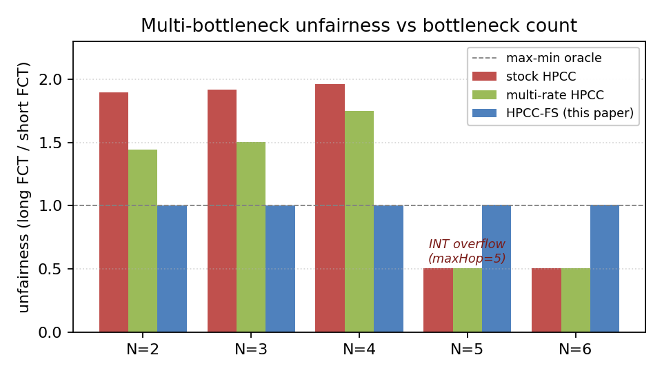
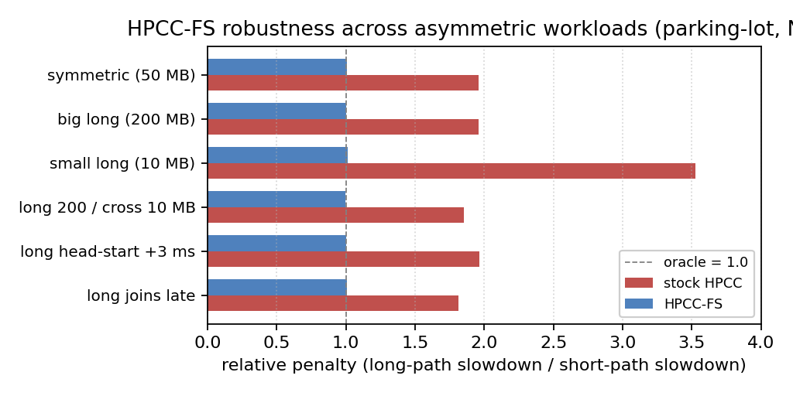

Deployable RDMA congestion control is evaluated almost exclusively on single-bottleneck benchmarks, while datacenter traffic increasingly crosses several contended links in series. We measure multi-bottleneck fairness on lossless RDMA fabrics and find that every scheme we evaluate — DCQCN, TIMELY, DCTCP, HPCC, PowerTCP — is unfair to the multi-bottleneck flow (1.6–2.3× against a fluid max-min reference), HPCC's instance a stable near-winner-take-all collapse. Rate traces identify an η-hold state in HPCC that freezes startup asymmetry; a controlled experiment shows why sender-side reconstruction of an explicit fair rate cannot repair it: independently initialized rate recursions preserve history, while one shared per-link register erases it. Carrying that register's value in a single 64-bit INT field (RDMA-RCP, three words of state per port) restores the max-min relative allocation (1.005×, zero PFC) and cuts a ring-collective coflow's completion time by 18–23%. We equally measure the boundaries: mixed HPCC/RCP traffic requires telemetry isolation, and high fan-in requires a lengthened control interval. Stock HPCC's control logic and wire format are unchanged; its regression outputs are byte-identical to the pre-RDMA-RCP baseline.


The simulator is the original HPCC code base upgraded to ns-3.45 (interface-level changes only). Before extending it we verified the upgrade still reproduces the original SIGCOMM '19 results — all five congestion-control schemes × two workloads (WebSearch, FB_Hadoop) × three loads, on the full 376-node fat-tree. Short-flow 99th-percentile FCT slowdown:
| case | HPCC | DCQCN | TIMELY | DCTCP |
|---|---|---|---|---|
| WebSearch 50% | 1.9 | 13.7 | 18.3 | 5.7 |
| FB_Hadoop 70% | 6.1 | 30.6 | 221.9 | 8.4 |
| PFC (FB 70%) | 0 | 0 | 1.12 M | 0 |
HPCC's short-flow tail stays far below DCQCN/TIMELY with zero PFC and sub-MB queues — the paper's central story reproduces. Full table and methodology: repro-verification/RESULTS.md. The per-run configurations and final results (554 MB compressed) are available as a public OneDrive archive.
The repository is the original HPCC simulator, modernized: the code base is upgraded to a tagged ns-3.45 release with interface-level changes only, with every module re-tested so the whole tree compiles and runs on modern ns-3. The full tree is therefore required to build and run (it is not a drop-in patch on the upstream repo). Quick start:
# build the optimized binary
bash examples/hpcc/algorithm-validation/run.sh --optimized --build-only
# generate the N=4 parking lot, run RDMA-RCP (cc_mode 11), and check fairness
python3 examples/hpcc/hpcc-fs/quickstart.py
# prints: UNFAIRNESS (long / mean-cross FCT) = 1.005x PFC = 0Full instructions, the claims→experiments map, and the engine-change table are in the repository README.